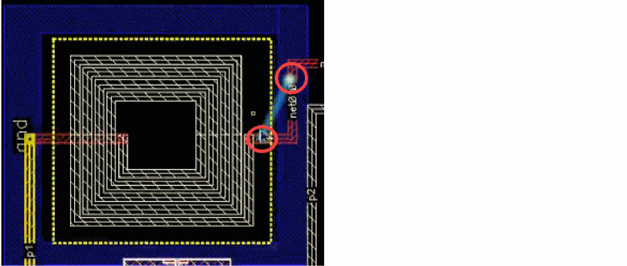
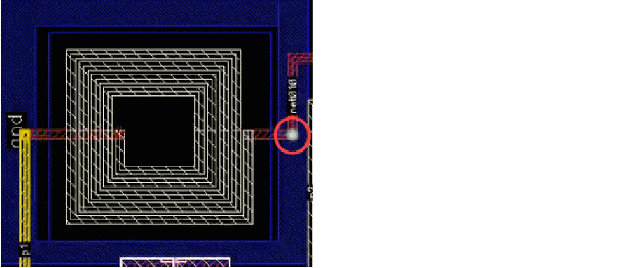
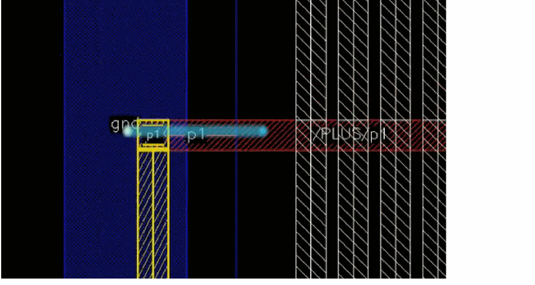
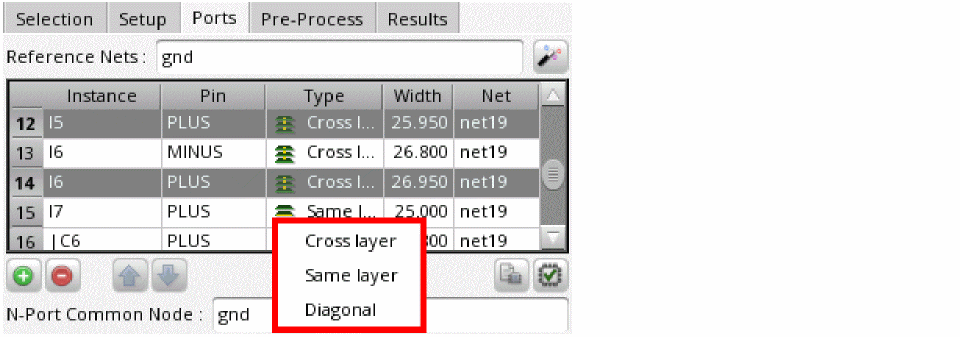

Creating Ports Manually for Clarity Models in IC Layouts
If you know where to place the negative edges of the ports and you want full control on the ports, select objects for a model and proceed with the following steps:
-
On the Selection tab, set the Current Return Path field to
Local Reference. - On the Ports tab, specify the name of a reference net in the Reference Nets field.
-
On the Setup tab of this assistant, select an appropriate option from the Die Ground drop-down list and specify a size or scaling option for the die ground.
A die ground is a metal shape that will be inserted into the model on an automatically generated layer located below the substrate. The conductivity of the die ground is very high. This non-physical conductivity might result in warning messages from the solver, but you can safely ignore those warnings. -
On the same tab, select the Display Highlight check box. This helps in viewing an accurate representation of the port placement.
The Side Walls field automatically shows a value depending on the current return path set for the model. -
(Optional) On the Ports tab, click Automatically Generate Ports to automatically generate ports for the selected objects.
Layout MXL identifies ports of the selected instances and populates the ports table with their details. You can review and modify the ports as per the requirements of your design.
If you do not want the tool to create any ports so that you get full control on the ports created for the model, skip this step. -
Click Add Port to create a new port.
A new row is added to the ports table. For each port, two rows are added in the edges table below the ports table. These rows show the details of connections of the port. -
In the row for the newly created port, select an appropriate port type in the Type column.
The possible port types are:-
Same Layer: The positive and negative edges for these ports are placed horizontally on the same layer. -
Cross Layer: The positive and negative edges for these ports are placed on different layers. These ports connect the layers vertically. -
Diagonal: The positive and negative edges for these ports are placed diagonally on different layers. This type of port can be created for Clarity solvers only.
To specify the port type for multiple ports, select the rows for the ports, right-click and choose Set Port Type. A list of the possible port types is displayed at the pointer location. Choose the port type you want to set. All the rows are updated with the selected port type.
 -
-
If required, modify the port width in the Width column.
To set the same width value for multiple ports, select the rows for those ports, right-click and choose Set Port Width. In the form that is displayed, specify a width value, and click OK. - Click each port and review the edges in the edges table. If required, you can edit the edges.
Related Topics
Port Management for Clarity Models
Return to top